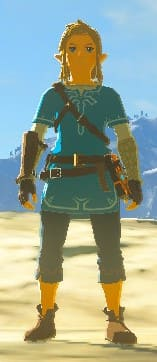
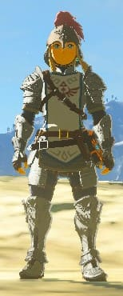
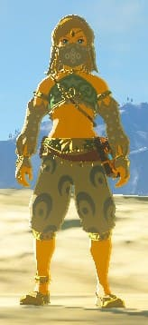
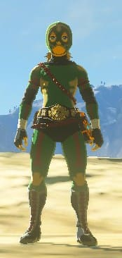

| Nom |
Type |
Où le trouver ? |
| Ensemble du début
|
Tenue |
Dans le temple de la Renaissance au commencement du jeu |
| Premier vêtement chaud débloqué
|
Tenue |
Quête pour donner la recette au vieil homme du sommet de la montagne enneigée |
| Tenue du Prodige
 |
Tenue |
Offert par Impa après avoir découvert le premier memory |
| Tenue Hylienne
|
Tenue |
Pantalon hylien : devant le Temple de Temps ou bien comme pour la
capuche
et la tunique, vendus à Cocorico aux Quatre Petites Mains |
Tenue Sheikah
 |
Tenue (type silencio) |
Tenue à retrouver également aux Quatre Petites Mains |
| Tenue de Soldat
 |
Tenue |
Tenue à retouver à la boutique Vent d'est à Elimith |
| Tenue de Pierre
|
Tenue (type ignifus) |
Vendue à la boutique du Bras d'acier au village Goron |
| Tenue Piaf
|
Tenue (type glagla) |
Vendue dans la case boutique du village Piaf |
| Tenue Zora
|
Tenue (vitesse nage augmentée) |
Casque zora : dans le lac toto au nord du Domaine zora
Armure zora : Remise par Dorefah lors du premier discours avec lui
Jambière zora : Quête du Reportage animalier au Domaine zora |
| Tenue Foudre
|
Tenue (type isolant) |
Casque isolant : Quête de Peur panique de la foudre
Combinaison isolante : Disponible dans un coffre du sanctuaire Toh'Yassa
Pantalon isolant : Disponible dans un coffre du sanctuaire Kyuka'Nata
Peut aussi être vendue au village d'Euzéro
|
| Tenue d'escalade
|
Tenue (vitesse escalade augmentée) |
Obtenue dans des sanctuaires :
Bandana d'escalade : Ri'Dahni
Gants d'escalade : Chasu'Keta
Souliers d'escalade : Thano'A
Peut aussi être vendue au village d'Euzéro
|
| Tenue de Demoiselle
 |
Tenue (type feinte) |
Obtenue dans la cité Gerudo ou sur le toit de l'auberge de l'Oasis |
| Tenue des Sablons
|
Tenue (type pikpik) |
Vendue dans le Club Secret Gerudo ou dans le village d"Euzéro |
| Tenue Nox
 |
Tenue |
Vendue exclusivement au Club Secret Gerudo
à condition d'avoir
les matériaux nécessaires |
| Tenue Barbare
|
Tenue (force frappe augmentée) |
Obtenue dans des santuaires :
Casque barbare : Tou'Karo
Gilet barbare : Dira'Ma
Culotte barbare : Kaza'Tokki
Peut être aussi vendue au village d'Euzéro
|
| Tenue Archéonique
|
Tenue (réduction dégats gardiens) |
Vendue au Laboratoire antique d'Akkala à condition de disposer des
matériaux nécessaires |
| Tenue Noire
|
Tenue (vitesse de nuit augmentée +
dissimulation) |
Vendue à la boutique Kilton |
| Tenue des Landes
|
Tenue |
Après avoir découvert et fini tous les sanctuaires, cette tenue sera
disponible
dans 3 coffres disposés dans Le Temple oublié |
Bijoux
(boucles d'oreilles et diadèmes) |
Bijoux |
Vendus à la Rêverie étoilée de la cité Gerudo à condition
d'avoir les matérieux et rubis nécessaires |